Jordan Trail
The whole length of Jordan, olive north to Red Sea
Jordan Trail crosses Jordan for 675 km and ends at Aqaba (Red Sea). You begin at Umm Qais (Gadara). Watch Walks moves you along it with the steps you already take, so it's about 27 weeks at 5,000 steps a day. Here are its 24 landmarks, in the order you meet them, photographed and written up.
- 675km end to end
- 24landmarks
- 27 weeksat 5,000 steps a day
- Aqaba (Red Sea)finishes at

The landmarks of Jordan Trail
24 landmarks, in walking order. Each photograph is by the person credited beneath it, used as they licensed it.
-
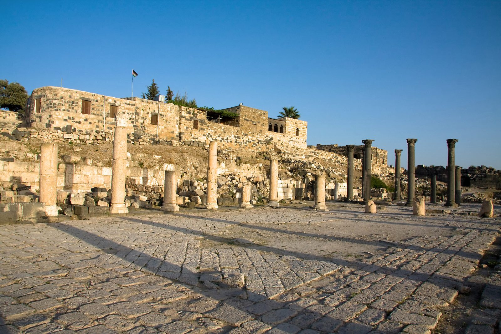
Photo: David Bjorgen · Wikipedia, CC BY-SA 4.0 Umm Qais (Gadara)
Black basalt columns tumble across a green hilltop, and from the old Roman theatre the land falls away to the Sea of Galilee, the Golan Heights and the Yarmouk gorge — three countries in a single sweep. This was Gadara, a city of the Decapolis where the gospels place the Gadarene swine. The Jordan Trail Association, founded in 2015, stitched the route together, and its 675 kilometres begin here.
-
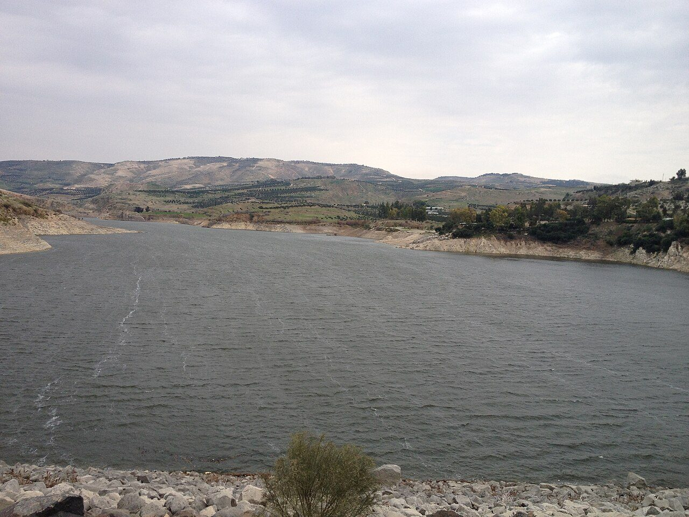
Photo: Bilal Dweik · Wikimedia Commons, CC BY-SA 3.0 Wadi al-Arab
Below the northern ridges the path drops into a deep, spring-fed valley threading towards the Jordan Rift. Oleander crowds the streambed and cattle egrets stalk the shallows. Farmers here still terrace the slopes for olives and pomegranate, as they have for millennia. This is the last reliable spring before the long pull back up onto the highlands.
-
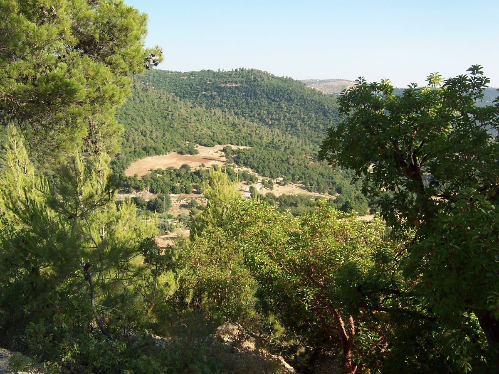
Photo: Smart Viral at English Wikipedia · Wikipedia, CC BY-SA 3.0 Ajloun Forest Reserve
Something rare in Jordan closes overhead here: shade. Evergreen oak, wild pistachio and the odd strawberry tree cloak these hills, a surviving scrap of the woodland that once ran the length of the highlands. The reserve, run by the Royal Society for the Conservation of Nature, shelters roe deer and, it is hoped, the return of the striped hyena. These are the last of the trees for a long while.
-
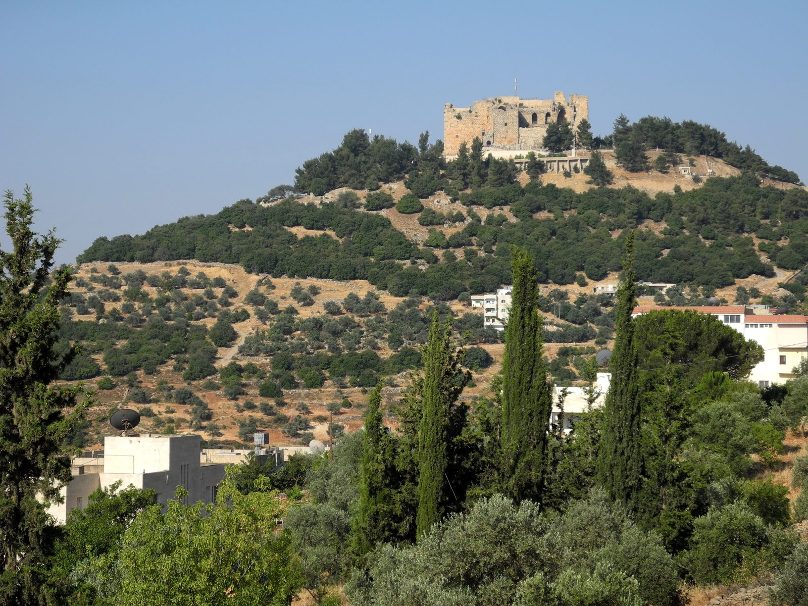
Photo: Hiking in Jordan website and guidebook · Wikipedia, CC BY-SA 2.0 Ajloun Castle
Crowning its hill stands Qal'at ar-Rabad, raised in 1184 by Izz al-Din Usama, a commander of Saladin, to watch the Crusaders and guard the iron mines and the road to Damascus. From its ruined towers the view runs west over the Jordan Valley to the hills of Palestine. Beacon fires once relayed news from here to Cairo in a single night.
-
Zay Ridge
The trail rides a high green shoulder above Zay National Park before plunging towards the rift. Below, the Jordan Valley shimmers, and on a clear morning the haze of the Dead Sea hangs to the south. Aleppo pine gives way to scrub as the ground loses altitude fast, trading the cool of the north for the warmth of the centre.
-
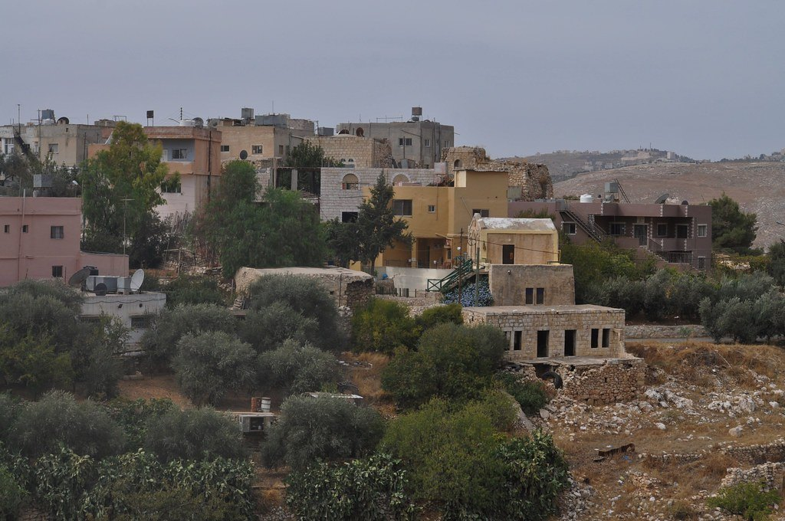
Photo: young shanahan · Flickr via Openverse, CC BY 2.0 Fuheis
White stone houses and church steeples mark this predominantly Christian town in the folds west of the capital. Vineyards and olive groves ring it, and its small breweries and cafes make a welcome halt. The route skirts Amman here, keeping to the quiet valleys while the city's four million sprawl unseen beyond the eastern ridge.
-
Wadi as-Sir
The path threads a green cleft on the very edge of Amman, where springs feed poplar and reed and the roar of the city softens to birdsong. This wadi has carried travellers down off the plateau for thousands of years. The water runs west and down, away from the tarmac, towards a palace that predates Rome's arrival in these hills.
-
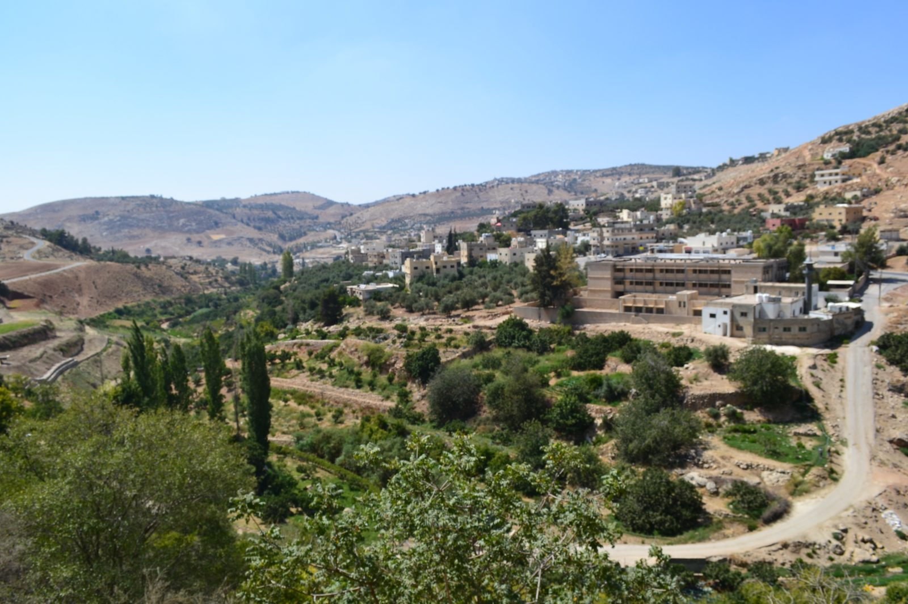
Photo: Mghyath fattal · Wikipedia, CC BY-SA 3.0 Iraq al-Amir
Set among caves and olive terraces stands Qasr al-Abd, the Palace of the Servant, a Hellenistic mansion of colossal stone carved with lions and eagles. The Jewish historian Josephus names its builder as Hyrcanus of the Tobiad family, around 175 BC, though he never lived to finish it. Few of the millions in nearby Amman ever come to see it.
-
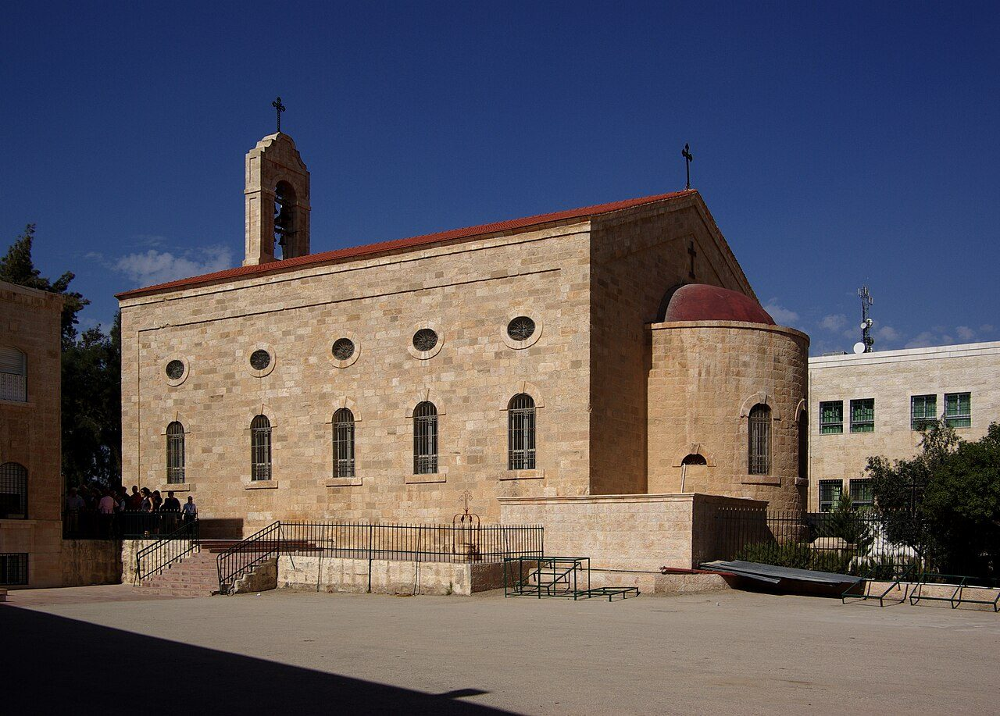
Photo: Berthold Werner · Wikimedia Commons, CC BY 3.0 Madaba
Set into the floor of Saint George's Church lies the oldest map of the Holy Land, a sixth-century mosaic of some two million stones charting Jerusalem, the Jordan and the Dead Sea. Madaba earns its name, the City of Mosaics, and workshops still cut and set tesserae in the old craft. Byzantine floors lie scattered through the lanes, the last town before the trail turns towards Moses' mountain.
-
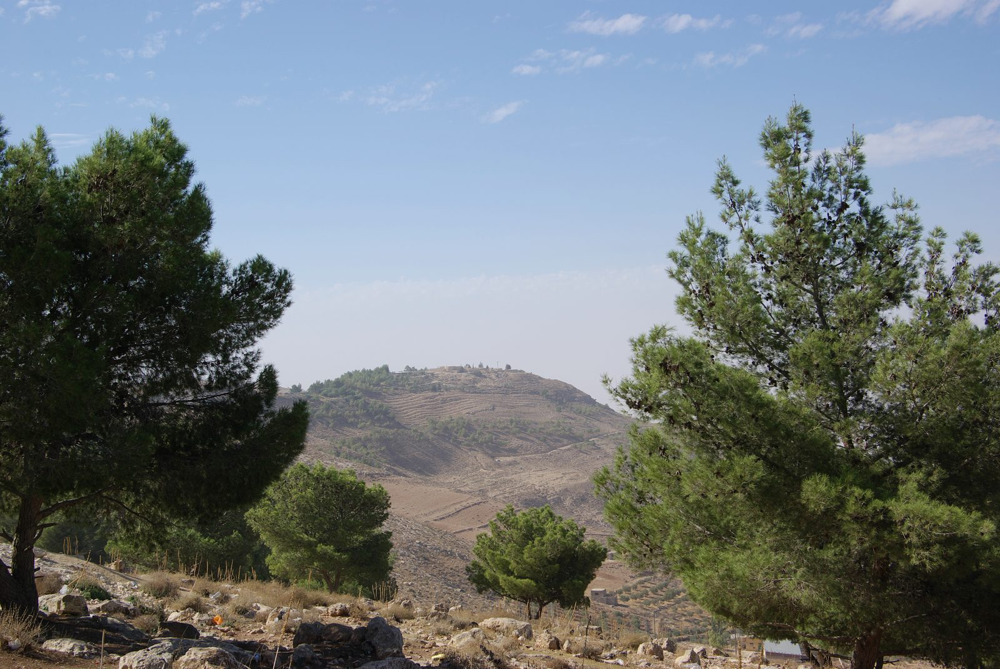
Photo: Berthold Werner · Wikipedia, CC BY 3.0 Mount Nebo
From this windy ridge at 710 metres Moses is said to have looked upon the Promised Land he would never enter, and here tradition places his grave. The Memorial Church shelters more Byzantine mosaics, and Fantoni's bronze serpent-cross rises against the sky. West, the Jordan Valley and the Dead Sea lie far below, with the towers of Jericho a smudge on the far bank.
-
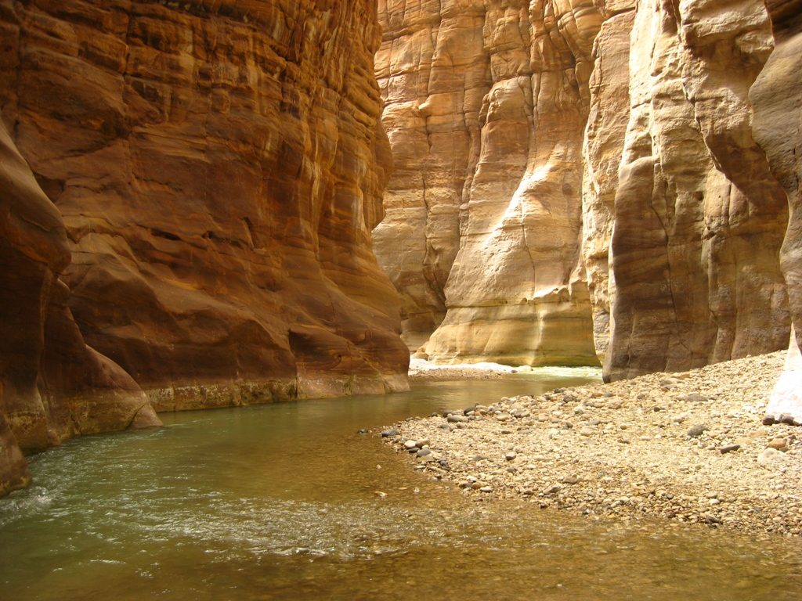
Photo: YousefTOmar · Wikipedia, CC BY-SA 3.0 Wadi Mujib
The ground simply opens. Jordan's grand canyon carves a kilometre deep towards the Dead Sea shore, the lowest dry land on Earth. The descent switchbacks through bands of rose and ochre rock, the sandstone growing warmer underfoot, until a river runs in the gorge below. Ibex pick along the ledges, and the climb out the far side is merciless in the heat.
-
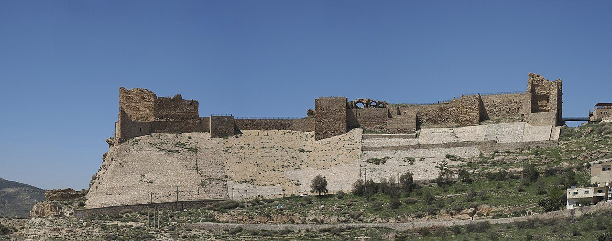
Photo: Petar Milošević · Wikimedia Commons, CC BY-SA 4.0 Karak Castle
Kerak broods on its spur above the King's Highway, a great Crusader fortress begun in the 1140s under Payen le Bouteiller. Its most infamous lord, Raynald of Châtillon, raided pilgrim caravans until Saladin took the castle in 1188. Vaulted galleries and dungeons burrow into the rock; from the ramparts the whole plateau spreads toward the desert edge.
-
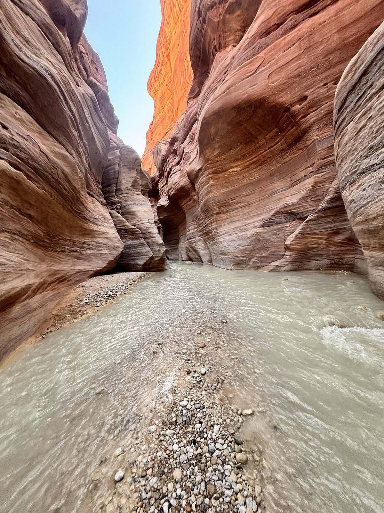
Photo: Khalidabukhamseh · Wikimedia Commons, CC0 Wadi al-Hasa
A broad canyon splits the plateau, its floor braided with warm springs and reeds that draw the eye after so much bare stone. The ancients knew it as the Zered, a boundary the Israelites crossed on their long wandering. Tamarisk shades the crossings and small fish dart in the pools. South of here the highlands rise again toward Jordan's wildest reserve.
-
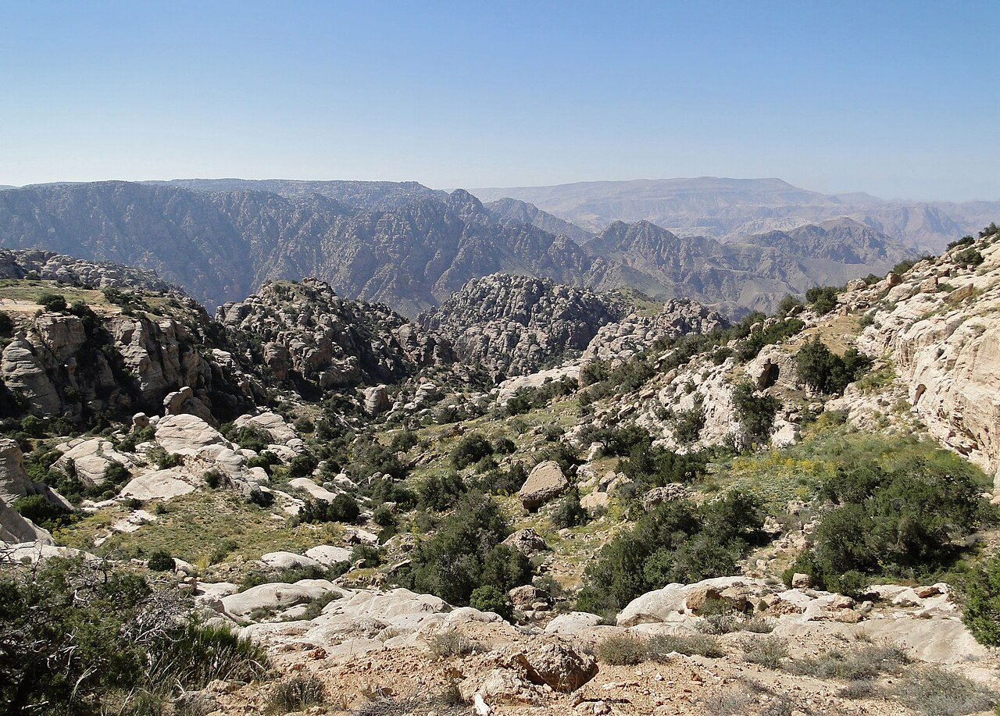
Photo: Bernard Gagnon · Wikimedia Commons, CC BY-SA 3.0 Dana Biosphere Reserve
Perched on the rim, the stone village of Dana looks out over a vast canyon dropping more than a thousand metres to the desert floor. Established in 1989, it is Jordan's largest reserve, spanning four bio-geographic zones from Mediterranean highland to Saharan sand. Sand cats and Nubian ibex live in its folds. From here Wadi Dana falls away in a long descent towards the copper valley below.
-
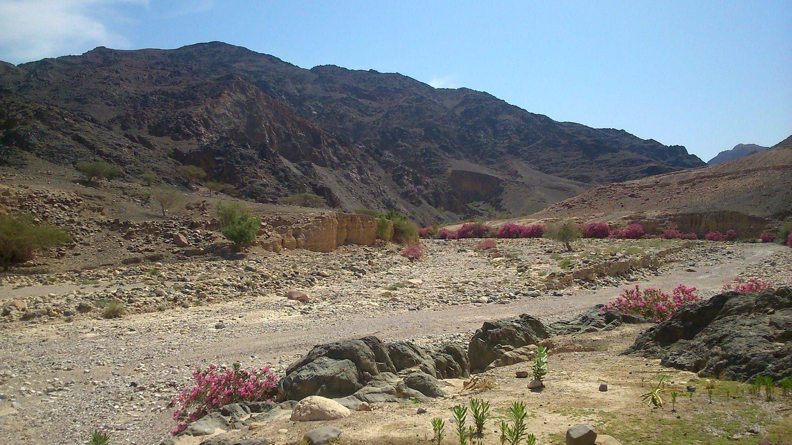
Photo: Joe Roe · Wikipedia, CC BY-SA 4.0 Feynan
Out on the reserve's low western floor, the black slag heaps of Feynan mark one of the oldest copper-mining sites on Earth, worked from the Neolithic through Roman times. An off-grid ecolodge, lit by candle, sits among Bedouin encampments. Sweet tea is poured strong here. The heat builds as the trail leaves the highlands for good and bends toward the Nabataeans' country.
-
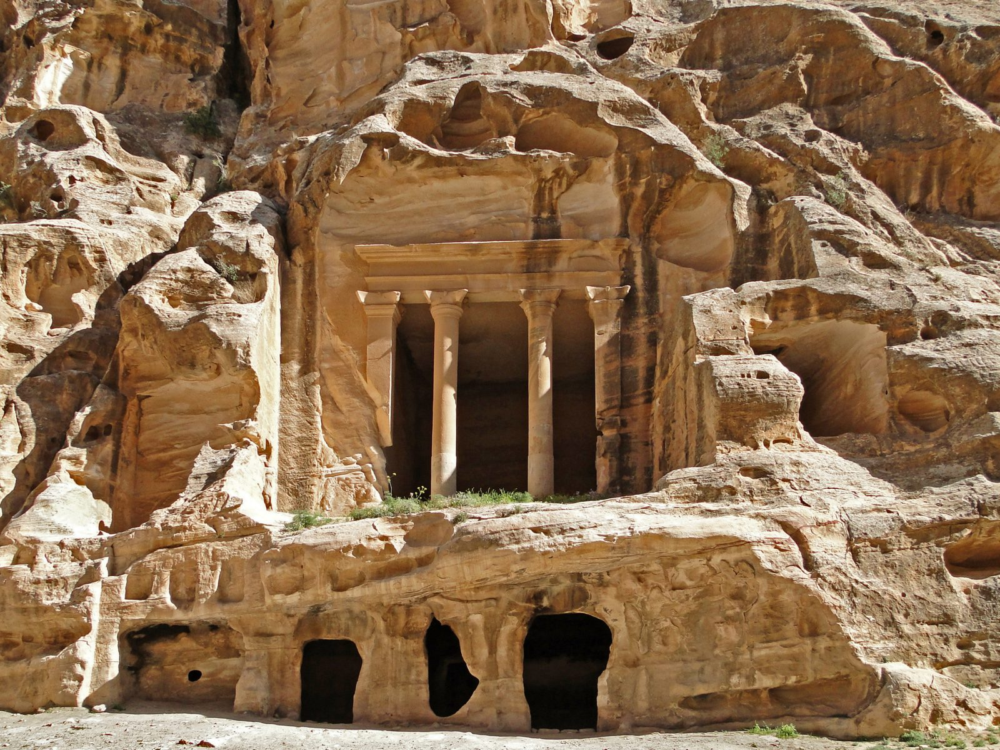
Photo: Bernard Gagnon · Wikipedia, CC BY-SA 3.0 Little Petra
A slot canyon barely a shoulder's width across opens into Siq al-Barid, the Cold Canyon, where the Nabataeans cut dining halls and a rare painted ceiling into the rose rock. Caravans once unloaded here on the approach to the capital. Nearby stand the mudbrick ruins of Beidha, a village nine thousand years old. This is the back door to the great city ahead.
-
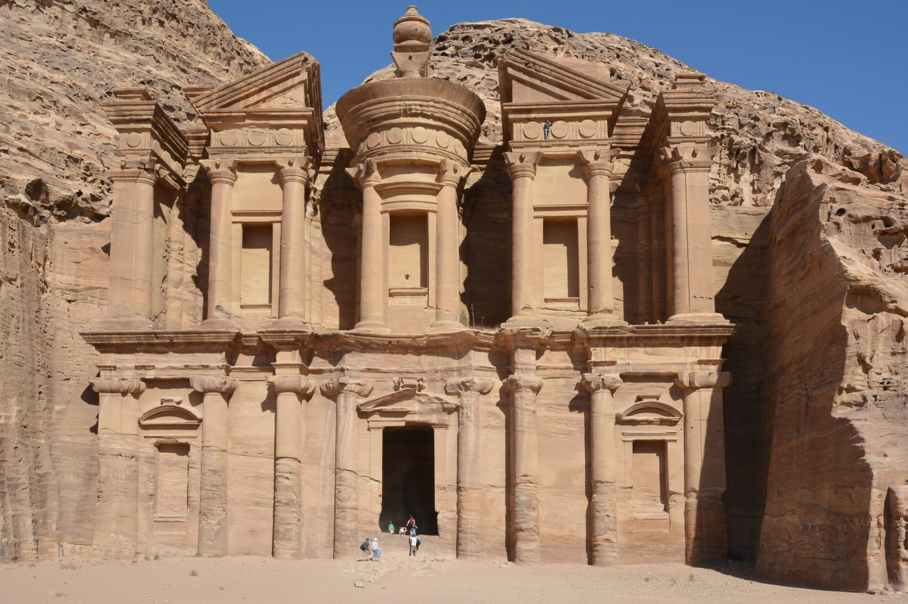
Photo: Azurfrog · Wikipedia, CC BY-SA 3.0 Petra
The Siq winds a kilometre between cliffs up to two hundred metres high, then parts to frame Al-Khazneh, the Treasury, carved glowing from the sandstone. This was the capital of the Nabataeans, masters of desert trade and water, at its height around two thousand years ago. Eight hundred rock-cut steps climb to Ad-Deir, the Monastery, above the valley — a wonder of the world and the halfway heart of Jordan.
-
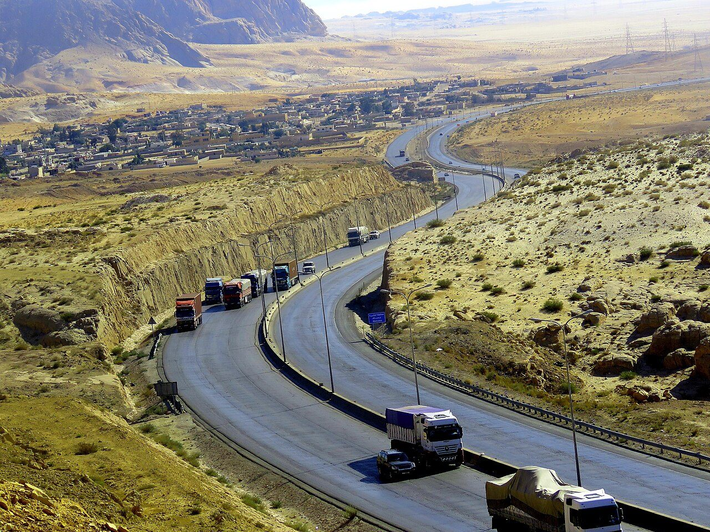
Photo: الدكتور انور الجازي · Wikimedia Commons, CC BY-SA 4.0 Ras Al-Naqab
Here the plateau ends at a giant escarpment and the world drops away. From the edge, the pink sands of the Hisma desert stretch south to the horizon, dotted with the first great sandstone islands. Trucks grind up the pass road below; ahead lies only sand and stone. This lip is the threshold between the settled highlands and the true desert.
-
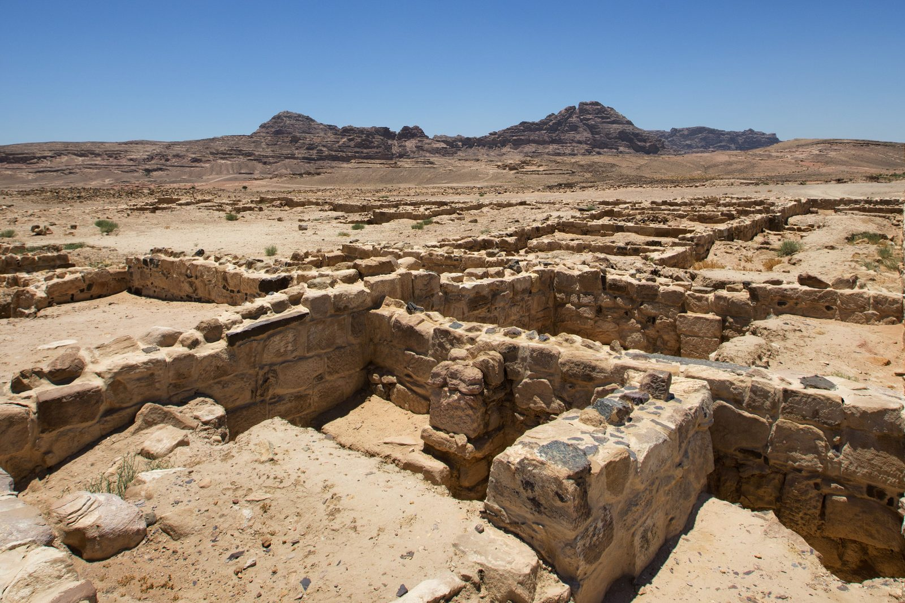
Photo: Bashar Tabbah · Wikipedia, CC BY-SA 4.0 Humeima
Scattered across a scorched plain lie the ruins of ancient Hawara, founded by the Nabataeans and later a Roman fort on the desert road. A remarkable network of channels and cisterns once carried water for kilometres to make the settlement live. It was also, briefly, the estate of the family that would seize the Abbasid caliphate. Little now moves here but the wind and the heat.
-
Ad-Disah
The trail comes down into a wide sandy basin where Bedouin gardens grow tomatoes and melon beneath towering rock walls. Camel trains still cross this valley on the northern approach to the protected desert. Here the waymarks give way to the knowledge of local guides. This is the last shade before the open dunes and the red sand country of legend just ahead.
-
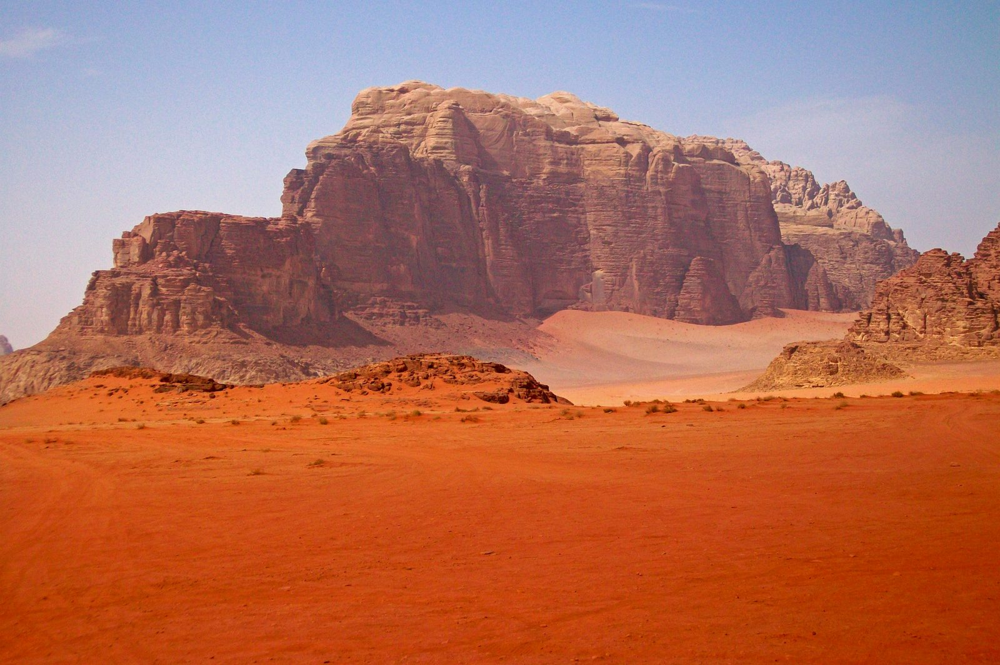
Photo: Daniel Case · Wikipedia, CC BY-SA 3.0 Wadi Rum
Red dunes run up against sheer cliffs of sandstone and granite in the valley the Bedu call the Valley of the Moon, a UNESCO site since 2011. T. E. Lawrence rode through here in the Arab Revolt, and a rock massif was later named the Seven Pillars of Wisdom after his book. Nabataean inscriptions still mark the canyon walls, and the night sky above runs thick with stars.
-
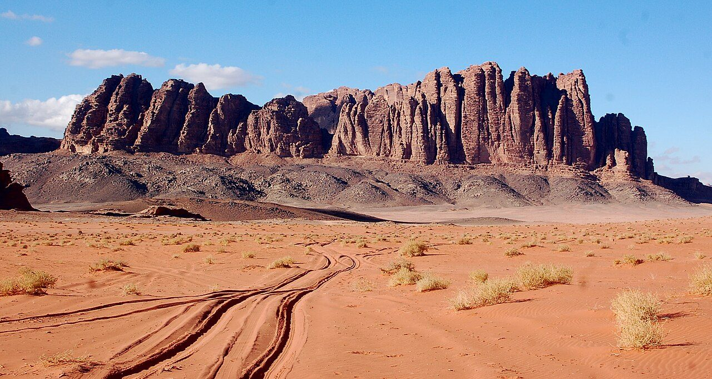
Photo: twiga-swala · Wikimedia Commons, CC BY-SA 2.0 Jebel Rum
Above the desert floor rises Jebel Rum, 1,734 metres, the second-highest peak in Jordan, its granite base worn into fluted walls. Bedouin hunters knew routes to the summit long before the first recorded European ascent in 1952, made by a British pair guided by a local sheikh. Gardens of fig and fern cling in the shaded clefts high above the sand, watered by a spring on the desert floor below.
-
Wadi Yutum
A broad desert wadi funnels the last stretch down towards the sea, its bed a highway of sand and gravel between granite hills. The air thickens and grows salt-heavy, and the temperature climbs with each hour as the ground sheds the last of its altitude. Acacias throw thin shade at the bends. Somewhere ahead, beyond the final ridge, the land runs out at last.
-
Aqaba
The desert opens and there, at last, is the sea — the blue Gulf of Aqaba, fringed with coral and hemmed by the coasts of four countries. This is Jordan's only shore, its old Mamluk fort standing guard over a harbour traded for centuries. Six hundred and seventy-five kilometres from the black basalt of Gadara, the trail runs the length of a whole country and ends in the warm shallows of the Red Sea.
Walking the Jordan Trail
Your watch is already counting these steps. Watch Walks spends them on the Jordan Trail, all 675 km of it, and hands you each landmark as you reach it. There's no route recording, no account and no ads. The Inca Trail is free; this one is a one-time purchase with no subscription.
Other trails in Asia
- Shikoku Pilgrimage 1,200 km · Japan
- Annapurna Circuit 128 km · Nepal
- Lycian Way 540 km · Turkey
- Manaslu Circuit 177 km · Nepal
- Nakasendo Way 530 km · Japan
- Kumano Kodo 46 km · Japan